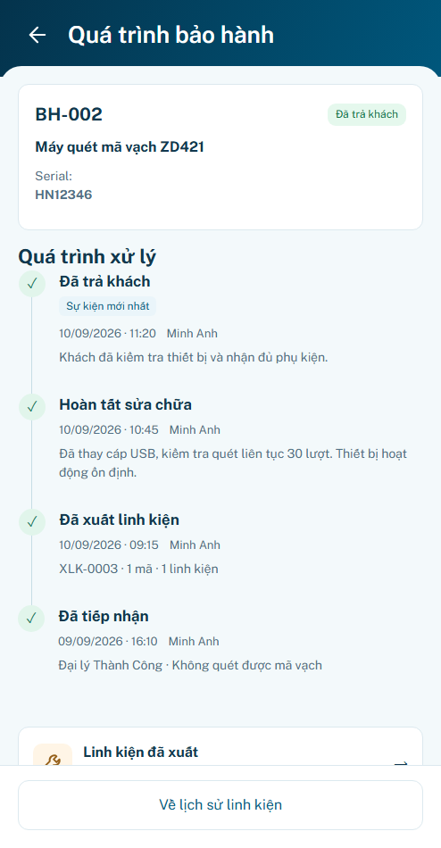
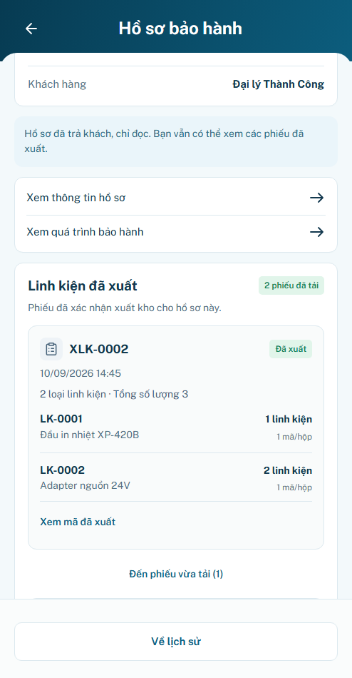
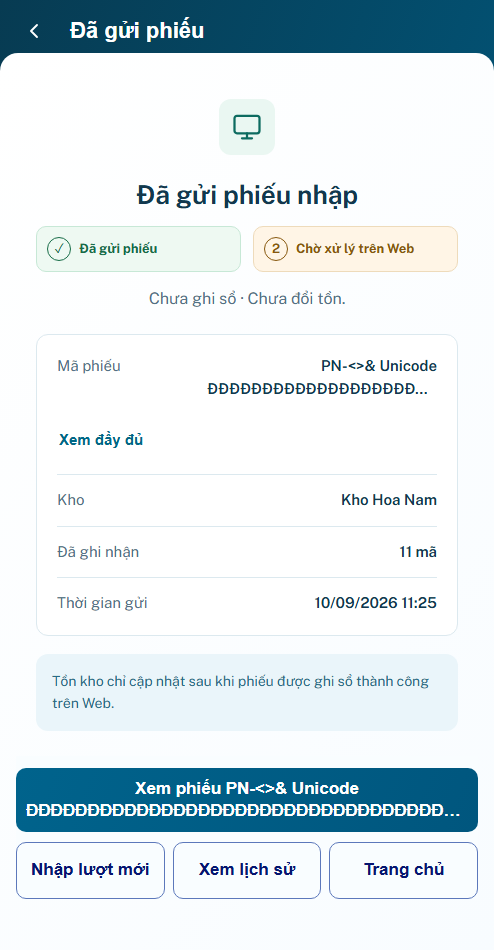

P24 r02 · Sáu cải tiến UI/UX
Đã triển khai · Chờ review hình thức
170 test logic · 50 nhóm trình duyệt · 35 tổ hợp layout · 4 viewport footer. Prototype, chưa xác minh backend/thiết bị/lưu bền.
S01 so sánh lượng đang sửa; S02 giữ số mã/phiếu và sửa mã nhanh; S03 mở đúng phiếu và tách hai mốc; S04 gọn cảnh báo và mở thẳng quá trình bảo hành. Giữ 494×950, footer Home/P03 và guard nghiệp vụ.
Ảnh trước–sau cùng viewport494×950, DPR1, font local và timezone Việt Nam. UUID của phiên mẫu được tạo riêng mỗi lần chạy. Bấm ảnh xem kích thước gốc.
S01 · Nhập số lượng
Trước · r01 Sau · r02
Sau · r02
S01 · Sửa số lượng đã chọn
S03 · Phiếu nhập vừa gửi
Trước · r01 Sau · r02
Sau · r02
Đường quay lại hồ sơ
P20 → Quá trình bảo hành P23 đúng case → Back giữ phiếu đã tải, cuộn và focus. Marker lạ không tạo caller; logout không phục hồi phiên.
Quá trình bảo hành
Trở lại lịch sử linh kiện đã tải
Mã phiếu dài vẫn đọc đầy đủ
Kiểm presentation bằng chuỗi tổng hợp2000+ ký tự trên state đã record: label nút gọn2dòng, nội dung gốc giữ tại summary/reader. Không dùng dữ liệu này làm bằng chứng WMS.
